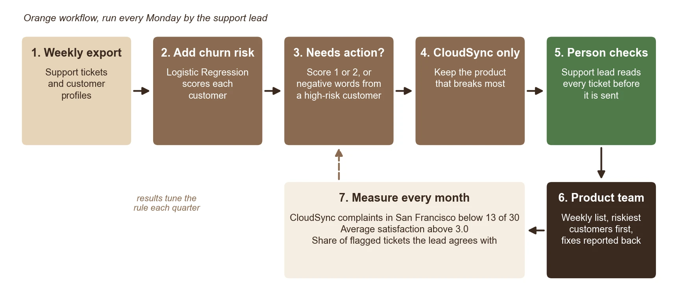
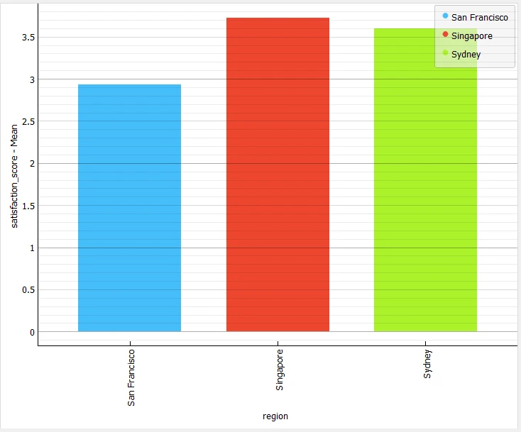
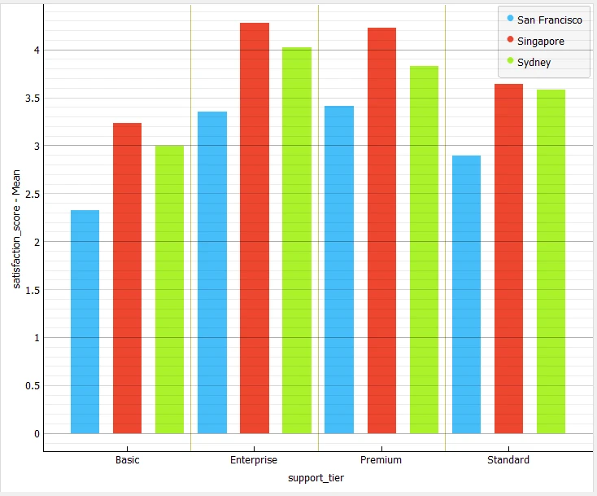
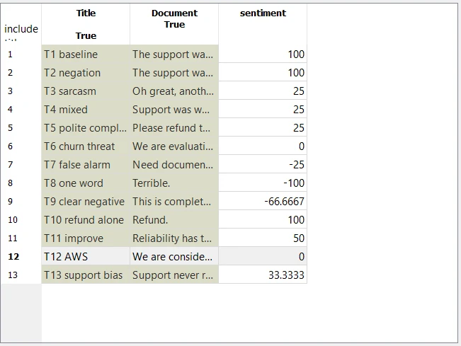
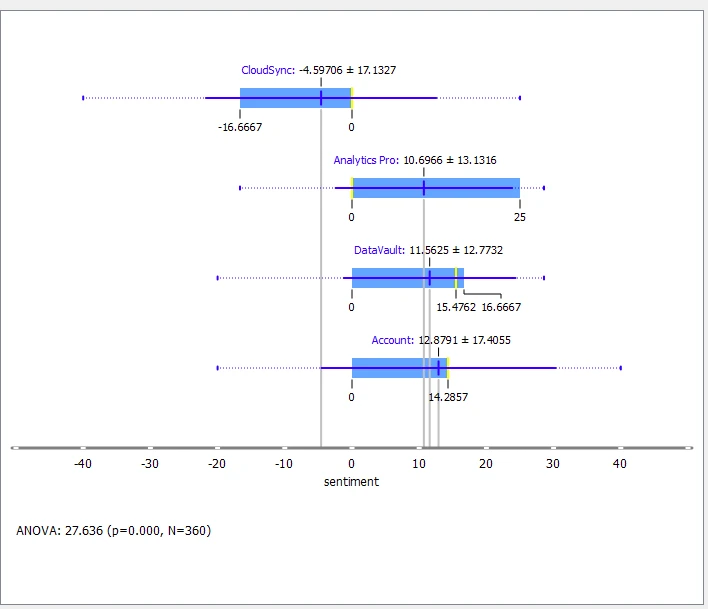
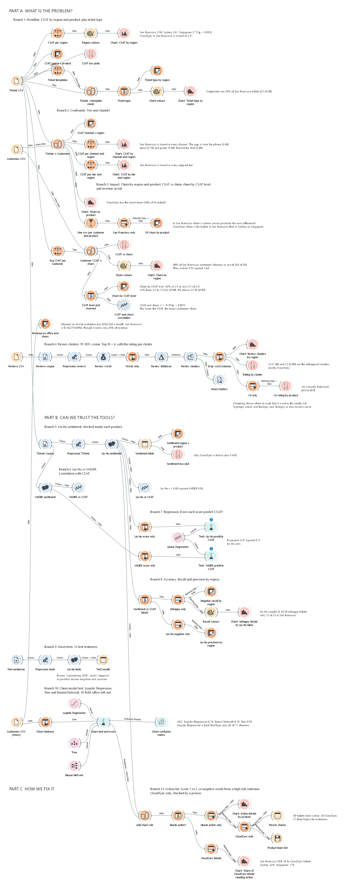
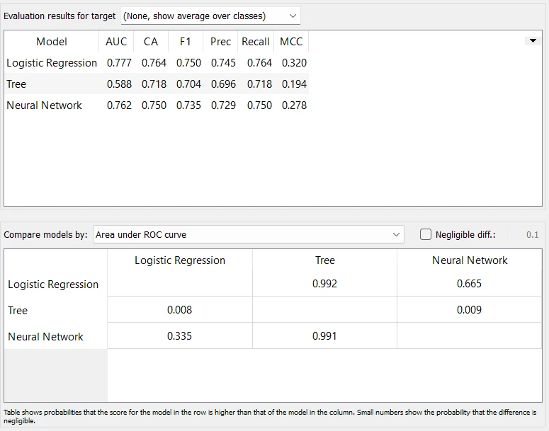
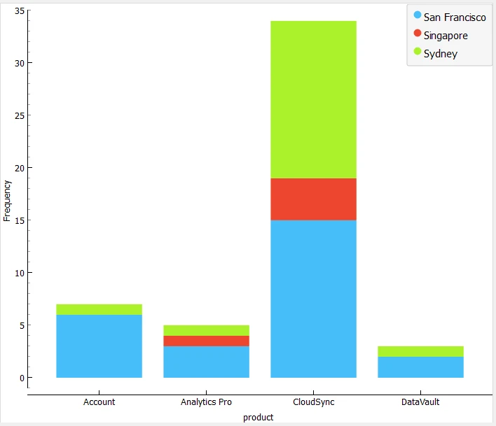
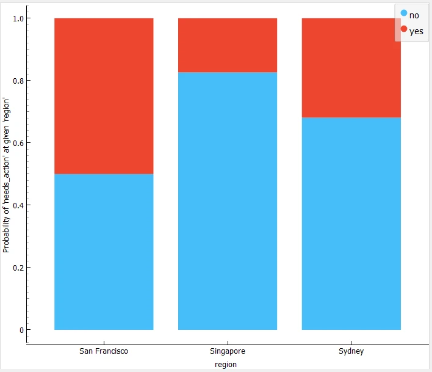

AI decision support and workflow automation
A case study software company had one office with much lower customer satisfaction, and needed to decide whether to change its support staff or fix a product. I used AI text mining and statistics to answer that, working through 360 support tickets, 240 reviews and 280 customer profiles in Orange, then built the workflow behind an automated weekly action list that a person checks.
against 3.61 and 3.73
sentiment tool, against an 80% target
of the three I compared
- Check the data
- Rule out simpler causes
- Test the AI tools
- Build the action list
- A person checks every flag

The problem: San Francisco is unhappy and leaving
CloudCore Networks has support offices in San Francisco, Sydney and Singapore. Its Chief Operating Officer needed to know whether San Francisco’s low satisfaction was a support problem (change staff) or a product problem (fix the product).
| Office | Satisfaction out of 5 | Customers who churned or are at risk |
|---|---|---|
| Singapore | 3.73 | 16% |
| Sydney | 3.61 | 20% |
| San Francisco | 2.94 (p < 0.001) | 48% (24 of 50) |
| CloudSync in San Francisco | 2.37, from 30 tickets by 22 customers | 43% of its tickets scored 1 or 2 |


-
It points to the product, not the support team. San Francisco is lowest in every product and support tier. It logs 23 of 38 complaints with about a quarter of the tickets, and its worst CloudSync tickets describe the product failing, never the support team.
-
Low satisfaction goes with losing customers. Customers who churned or were at risk scored 2.93 against 3.64 for those who stayed (p < 0.001). That shows the two go together, not that one causes the other.
So I advised against staffing changes and recommended fixing CloudSync’s reliability, starting in San Francisco, with product faults routed to the product team.
The impact
-
$302,520 a month is at risk. In the case study data, that’s the monthly revenue from customers who churned or are at risk, about $3.6 million a year.
-
44% of it is in San Francisco. That’s $134,270 a month, from an office that earns only 20% of the revenue.
-
Satisfaction is the lever. Customers whose tickets average 2.5 or less churned or are at risk at 62%. Above 3.5, it’s only 9% (r = −0.39).
Our idea: three checks and a person
Take one real ticket from the case study: a San Francisco customer who scored CloudSync 1 out of 5 and wrote, “Honestly considering AWS for this, reliability has to improve.” A sentiment tool on its own sees the word “improve” and reads it as positive, so this unhappy customer slips through. Our action list runs three checks instead:
| Check | For this ticket | How far to trust it |
|---|---|---|
| 1. Is the customer’s score 1 or 2? | Yes, it scored 1 | Given by the customer, so always trusted |
| 2. Are the words negative? (Liu Hu) | No, it reads positive | Catches 58% of unhappy tickets (22 of 38) |
| 3. Is the churn risk 50% or more? (Logistic Regression) | Yes, 68% | AUC 0.78 in a 10-fold test |
A ticket is flagged if check 1 matches, or if checks 2 and 3 both match, and a person checks every flag. The sentiment tool never acts alone: it caught only 58% of unhappy tickets, against an 80% target.


Methodology: four steps
- Find where it hurts. Orange analysis of 360 support tickets and 240 reviews showed CloudSync is the weakest product everywhere, and worst in San Francisco.
- Flag the tickets that need action, using the customer’s score, the words and the churn risk. A score filter alone misses customers whose words warn.
- Put the riskiest customers first, then a person checks. The customers most likely to leave go to the top, and the support lead checks every flag before it goes to the product team.
- Prove it works. By month 3, the lead agrees with at least 80% of flags. By month 6, San Francisco CloudSync tickets scored 1 or 2 fall from 43% to 25%, and satisfaction rises from 2.37 to 3.0.
How I checked the data first
- Quality: broken links, impossible values and duplicates. The ticket text was heavily standardised: 48 distinct texts across 360 tickets.
- Privacy: company names removed, only group averages reported.
- Stakeholders: I interviewed the Support Lead and a Data Analyst and turned their tests into the bar for each finding.
The Orange workflow
I built the whole workflow, 86 widgets, and ran it live in the pitch. It has three parts. Part A shows the problem is real, Part B tests whether the AI tools can be trusted, and Part C builds the action list.

Testing the AI tools
| What I tested | Result | Decision |
|---|---|---|
| Churn model, 10-fold cross-validation | Logistic Regression AUC 0.78, Neural Network 0.76, Decision Tree 0.59 | Logistic Regression, because it ranks customers best and its weights can be read |
| Sentiment tools against customer scores | Liu Hu correlation 0.69 and R² 0.47, VADER 0.56 and 0.31 | Liu Hu |
| Local LLM, qwen3:8b via Ollama, on all 360 tickets | Caught 37 of 38 unhappy tickets with no false alarms | Left out, because it added no tickets beyond the customer’s own score |
| Automation check | The saved list updated by itself when new tickets arrived, from 49 to 51 flags | Also found that brand-new wording silently shrank the list, from 49 to 39, and documented it |
The office was left out of the churn model so it couldn’t favour one office, and the LLM ran locally, so no customer data left the laptop.

The result: a weekly action list
-
The list points at CloudSync. The workflow flags 49 of 360 tickets, and 34 of them are CloudSync. Half of San Francisco’s CloudSync tickets need action, against 32% in Sydney and 17% in Singapore.
-
The extra checks find tickets the score misses. They add 9 CloudSync tickets, and 5 of those customers churned or are at risk.


Roadmap
Start where it hurts most, and widen only when the evidence says so. It needs no new software and no new staff, about 30 minutes a week for the support lead.
| Phase | Where and what | Who checks | To move on |
|---|---|---|---|
| 1. Weeks 1 to 13 | Set-up and pilot: San Francisco, CloudSync only | San Francisco support lead | The lead agrees with 80% of flags |
| 2. Months 4 to 6 | CloudSync in Sydney and Singapore | Each office’s support lead | Each lead agrees with 80%, and San Francisco’s unhappy CloudSync tickets fall to 25% |
| 3. Month 7 onwards | Other products, starting with Account | Each product’s own team | Satisfaction stays at 3.0 or more, reported monthly to the COO |
Who gains, and who is left out
| Who gains | Who is left out |
|---|---|
| Customers: faults get fixed for good | Silent customers: 71 of 280 never log a ticket |
| Product team: a weekly list of real faults | Polite writers: mild complaints slip past the tool |
| Support agents: fewer repeat tickets | Low-risk customers: they wait for the monthly spot-check |
| The COO: evidence before staffing decisions | Small offices and other products: too little data, or a wait until month 7 |
No role is removed. Work moves from closing tickets to fixing what causes them, and one rule protects staff: the list judges the product, never people.
Risks and how we handle them
| Risk | How we handle it |
|---|---|
| Missed complaints: the sentiment tool misses about half the unhappy tickets | Every score of 1 or 2 is flagged anyway, with a monthly spot-check of the rest |
| False alarms: some flags are not real problems | A person checks every flag, and a second reviewer audits the removals |
| Missed leavers: the churn model misses many customers who leave | Retrain and re-test it every quarter, and flag low scores anyway |
| Customer privacy: tickets hold customers’ own words | Customer data never goes into cloud AI tools, and no shared table can single out one customer |
Our recommendation: approve a 3-month San Francisco CloudSync pilot, and widen it only if the lead agrees with 80% of the flags.
Watch the demo
The demo I recorded and voiced for the pitch: the Orange workflow, the AI tool tests, and the action list updating when new tickets arrive.